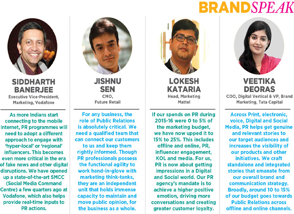

The Rs. 2000 Cr Opportunity… And How To Get There
By Christina Moniz, IMPACT
With rapid growth of Digital and Social media, and changing media consumption pattern of millennial consumers, the PR industry needs to diversify and realign its services, become strategic partners for marketers and deliver direct impact on the business of brands to reach the projected growth for 2020
The Public Relations (PR) industry in India has shown substantial growth over the years, as much as 18% in the last year alone, according to a survey report released by the Public Relations Consultants Association of India (PRCAI). Valued at Rs 1,315 crore in FY17, up from Rs 1,120 crore last year, the industry is projected to grow to a value of Rs 2,000 crore by 2020. But with the dramatic way in which brand communications are driven today, how well equipped is the PR industry to meet that number? In the age of real-time communication and with the rapid pace of Social Media, brands will be looking at PR to do more than they ever have. PR leaders and stalwarts share their insights into what the industry must do to evolve in order to meet the changing communication needs of brands today.
ADVANTAGE NEW AGE MEDIA
Dilip Cherian, Group Managing Director, Perfect Relations Group, believes the PR industry must shift emphasis from traditional media communications to creating more niche experiences for consumers. “Conventional marketing spends are not working the way they used to. So the PR industry today needs to use tools that offer two-way engagement with customers. The shift towards Digital PR is a result of this pressure. The other significant change is that the industry is no longer designing mega events to offer large scale engagement with consumers, but creating more niche experiences where messaging is targeted at smaller, focused groups of people. We are shifting the emphasis from traditional media tools to communication in product, publications and on platforms like YouTube,” he says.
The PR professional must earn consumer attention instead of demanding or paying for it, according to Himanshu Saxena, Brand Lead, Edelman India. “With the advent of social media, people are willing to talk to strangers instead of the brand they have known for 30 years. Over 50% of consumers in India are making their purchase decisions based on the social influences around them instead of brand messaging. PR agencies need to now deliver direct impact on a brand’s business. You can no longer feel satisfied with the depth of engagement and likes.”

Siddharth Banerjee, Executive Vice-President, Marketing, Vodafone India, believes it is necessary to have a strong synergy between marketing and PR with the growing importance of newage media. “PR has played a critical role in enhancing Vodafone’s brand recall and reinforcing its commitment especially as the Indian Telecom sector navigates through a hyper-competitive phase. Working closely with the PR team has helped us garner meaningful mindshare for key marketing campaigns like Vodafone’s IPL efforts, the #LookUp movement, The Data Strong Network campaign et al. Traditional mediums like Print and TV are seeing slower growth while the mobile phone is becoming the preferred choice to bridge the content divide. The digital consumer is now accessing content on-the-go, especially in regional languages.”
Storytelling will continue to remain the pivotal element in the PR practice, says Prema Sagar, Vice Chair, Burson-Marsteller, Asia Pacific & Principal/Founder, Genesis Burson-Marsteller. “Visual story-telling, increased influencer engagement – online and offline -as well as the use of co-created content is on the rise. Today ‘listicles’, short nuggets of stories, or snackable news, is the way to go and PR will have to play a pivotal role in creating communication strategies to suit this need. In short, the combined power of data analytics, creativity in thinking, content and design, visual story telling and innovative and swift delivery of the message will be the arsenal that PR consultancies will need,” she states. Valerie Pinto, CEO, Weber Shandwick, concurs, adding that PR agencies will need to build on their storytelling capabilities and apply them to new age media. “Platforms like Buzzfeed and Scroll have been very effective. The younger people in our teams find this far more appealing than traditional PR. Today, everything is a playing field. You can apply PR to every division in an organization, but it’s how you approach that pitch, how you build brand purpose and achieve talkability across platforms,” she explains.
A CHANNEL AGNOSTIC APPROACH
While the tools and platforms available to PR agencies are plenty, brands require agencies to align their strategies with their overall purpose. PR agencies will need to now leverage their story-telling capabilities across various platforms. Chetan Mahajan, CEO & President, Hill + Knowlton Strategies India, maintains that the PR industry must continue to leverage its story-telling proficiency, irrespective of the channel. “In the past, we would restrict our stories to the earned space but now we have built and we continue to build our skills and use other channels including paid, owned and shared channels.
For the industry to stay relevant and attract larger budgets from brands, we need to enhance our content capabilities and deliver stories in a channel agnostic fashion. For instance, if it’s about thought leadership, why not use LinkedIn in addition to the conventional, traditional Press?” he says. Sonia Huria, Head, Communications & CSR, Viacom18, adds that mass communication must now be replaced with a focused approach. “The days of carpet bombing are over! Whether social or traditional media, campaigns today are completely based on targeted audience segmentation. The availability of data and tech tools that help monitor, analyse and interpret data across platforms are increasingly shaping communication strategies, seamlessly synchronizing offline and online parts of a campaign. The RoI for communication is now no longer measured in terms of just size but rather a whole host of parameters such as placement and reach.”
The narrative now will be a collaborative one, featuring both traditional and new-age media, says Kunal Kishore Sinha, Founder & Director, Value 360 Communications. “The lines between PR firms and Digital firms are going to blur and I see my agency more as a communications firm. Our strategy for clients will need to seamlessly weave the narrative across channels. The ‘paid’ element will also come into play and that will add to the revenues of the PR firm. However, unlike advertising, the PR agency must now look at strategically using the paid space and make it appear more like an earned space,” Sinha says.
Communications consultant Anup Sharma opines that the concern of credibility is what will make the role of influencers very important in the future. “The blurring line between paid and earned media creates the issue of credibility and trust in communication, leading to the growing importance of influencers who are now being used to drive engagement. To continue to stay relevant, PR firms will also need to rely on big data and artificial intelligence not only for predicting audience interests but also to move the needle towards credible engagement,” he says.
SO, HAS THE PR RETAINER INCREASED?
In the past, PR agencies typically have had to contend with the smallest share in the marketing pie, but that is slowly changing, though agency heads believe that there is a long way to go before the PR industry gets sizeable increase in retainer fees. Paresh Chaudhry, CEO, Madison PR explains, “About 20 years ago, as much as 95% of the marketing budget was allocated to advertising, while the rest was BTL or something else. PR would get about 1% or 2% of the budget, but we have made some progress since then. Today, about 70% is allocated to advertising, sometimes even 65%. For example, Hindustan Unilever’s ad spends have reduced considerably from 95% to 62%. I spent many years with the organization, so I know that. A good percentage is now going to Digital. So if PR got about 2% of the budget 20 years ago, it had perhaps moved up to 3% a decade ago. Now, it is at about 5% for very large companies, while mid-sized companies may spend as much as 10%. Start-ups only use PR and do not advertise much, so that’s a new sector where the industry can grow.”

There is still an uphill task in convincing brands to invest more in PR, but they are now recognizing that its ability to modulate its message to what is in the news works very well. Cherian explains, “Marketers are looking to us to harness the benefit of something new happening in the environment. Also, PR is able to respond much faster than a traditional media campaign. By the time you shoot a commercial or put together an advertising campaign, that specific mood or trend has passed. This gives the PR industry an opportunity to harvest opportunities and thereby get an increased budget from the marketing pie.”
Paroma Roy Chowdhury, VP, Corporate Communications & Public Affairs, Soft Bank Group, insists that mere functional excellence is not enough for PR agencies to get a larger share of the pie. Brands are looking at PR partners to make an impact on their businesses. “Brands are looking at increasing their budgets for PR, but it would entirely depend on how much credibility and value that the PR partners – both internal and external – bring to the table. To get a larger share of budgets and attention, you need to be a business stakeholder and partner and drive outcome that affects the business positively. Mere functional excellence does not do it, though that by itself, is very important,” she says.
Vivek Rana, CEO, The PRactice, points out that while PR budgets may have increased, revenues haven’t necessarily increased. “Agencies may be getting bigger budgets or retainers but a large chunk of that is often allocated to paid media space or coverage. So perhaps out of a Rs 20 lakh retainer, you may be spending as much as Rs 18 lakh on paid exposure, in which case your revenues are not really increasing. I would, therefore, not use retainers as a benchmark. If you’re actually able to widen the scope of what you’re doing and thereby, get higher budgets allocated to PR, that may actually impact your revenue overall. That is what we are doing now at The Practice,” Rana adds. Pinto explains that the few brands that do not advertise heavily tend to invest more in PR. “Brands such as Mattel, Disney and Apple do a few hoardings and Social Media advertising and no TV, so they are able to devote a larger share of their budget to PR. I did a bit of an experiment with my consumer vertical team that has worked very well. The team’s target was to get me twice the revenue from the same client. So from the base retainer, we offered our existing clients Social Media and a bit of Digital and influencer engagement. We have grown 59% in the last one year just because we were able to build on our capabilities with the new age media. A brand will definitely look at giving you a larger retainer if you can widen the scope of what you do. But if you restrict your scope of work to something specific like media relations, then brands will determine your remuneration accordingly.”
Lokesh Kataria, Head Marketing, Mattel India, tells us that his PR spends have increased over the past year. “With regard to PR, we were not up to the mark until a few years ago, but we have geared up now. If our spends during 2015-16 were between 0-5% of the marketing budget, we have now upped them to somewhere between 15% to 25%. This includes offline and online, PR, influencer engagement, KOL and media. Our mandate to our PR partners is very clear – we want to engage with the millennial parents. So whether they read a magazine or the Navbharat Times or if they are on the First Moms Club or Kids Stop Press, there is a whole wide universe that impacts them. For us, PR is no more about just getting exposure in a publication. It is now about getting impressions in a Digital and Social world. Our PR agency’s mandate is to achieve a higher positive emotion and create greater customer loyalty.”
Veetika Deoras, Chief Operating Officer, Digital Vertical & VP, Brand Marketing, Tata Capital, explains that the brand takes a holistic view of PR encompassing online and offline channels, and says, “Across Print, electronic, voice, Digital and social media, PR helps get genuine and relevant stories to our target audiences and increases the visibility of our products and other initiatives. We endeavour to stand out by crafting standalone and integrated stories that emanate from our overall brand and communication strategy. Broadly, around 10% to 15% of our budget goes towards PR across offline and online channels.”
Apart from looking at increasing retainers and revenue, most PR firms are also mindful about not taking on business that pays anything less than their stipulated minimum retainer fee. Archana Jain, Managing Director, PR Pundit, elaborates, “If it is not profitable for us, we do not take on an account. Having said that, all of us in the industry flout the minimum retainer rule from time to time. There could be several reasons – it may be a marquee brand that we want to get on board, or it could be a new segment where we see a great opportunity to build ourselves as a firm. I recall that some years ago, we took on a luxury brand for a retainer and we were not making much money on it. But because of that brand, we were able to go out and win ten new accounts that helped us make the money we were losing off that account. So we have to be judicious in making decisions with new accounts.”
WINNING THE BOARDROOM’S PATRONAGE
Nitin Mantri, CEO, Avian Media and President of the PRCAI, is of the opinion that PR needs to look at the boardroom, and not just marketers, for bigger budgets. “If we are to look at a sizeable jump in budget, PR firms should be working more with C-level executives than with marketing heads. From a reputation perspective, CEOs are becoming more wary of the right corporate reputation. Our clients are still Corporate Communication heads and therein lies the problem.” Rana agrees, adding that the PRmandate will have to evolve into a strong management discipline reporting directly into the boardroom. “PR will have to supersede communication and marketing, and to be really successful, it will need the direct patronage of the board.”
Streamlining measurement systems for a better understanding of ROI is one step the industry can work towards to get organizations to devote a greater budget to PR. Jaideep Shergill, Founding Partner, Pitchfork Partners, says, “There are some measurement systems in place but these are not enough and they are not even used consistently. For the PR industry to stay in the game and be relevant, we need to step up and offer services beyond core functions. There’s a whole lot that can be done in the space of internal communications, talent branding, CSR and shareholder communication. These are areas that no other industry can meet. There are enough opportunities that we need to recognize and capitalize on.”
Jishnu Sen, CMO, Future Retail opines that the role of PR can definitely go beyond just working with marketing teams, especially for companies that are positioning themselves as market leaders.“For an organization to be viewed at thought leaders or market leaders, we need a qualified team that can connect our customers to us and keep them rightly informed. Though PR professionals possess the functional agility to work hand-inglove with marketing think-tanks, they are an independent unit that holds immense capacity to maintain and move public opinion, for the business as a whole,” Sen says.
Deoras points out that choosing the right PR partner across channels is critical. “A good PR partner ensures that they understand the business and brand values, the nuances of the industry, are competent across channels and are able to pre-empt and manage crises, among other things. While the ultimate goal of all communication is to generate awareness and sales, PR focuses on generating goodwill and credibility which is extremely valuable for any company and brand.”
WHAT LIES AHEAD
The industry may have grown significantly from where it was five years ago, but it is still playing catch-up with the way PR has grown in other markets such as China. Amit Misra, CEO, MSLGroup, points out, “For the same resource deployment and the same services, China still earns remuneration that is about five times more than we do. That being said, I think they have been able to demonstrate more value and extract better premium for their services, which is something we need to work towards. I think there are enough people willing to pay more towards PR but what we need to do is add more value to our clients. Agencies that are able to add specializations are sitting in a very healthy position.” There are a few things that have impacted the industry positively, he adds.
“Clients now have an approach of strategic thinking where PR is concerned and that is very welcome. Another positive change is talent. Today we have youngsters coming in from esteemed institutions like the London School of Economics with an undergraduate course in mass communications.
They are looking at career options in communications, something you wouldn’t have seen a decade ago. This augurs very well for the industry.” Vodafone’s Banerjee maintains that the role of PR will become fundamental with growing digital disruptions. As more Indians start connecting to the mobile Internet, PR programmes will need to adopt a different approach to engage with ‘hyperlocal’ or ‘regional’ influencers, he says, adding, “This becomes even more critical in the era of fake news and other digital disruptions. We have opened up a state-ofthe- art Social Media Command Centre a few quarters ago at Vodafone which also helps provide real-time inputs to PR actions.”
Rakesh Thukral, Managing Director, Edelman India, maintains that engagement will remain the core of the PR profession, though there are newer layers and degrees of engagement. The PR industry must look at diverse skillsets when recruiting. The new-age PR agency will, therefore, have more than just PR professionals. “We are taking in people from the strategy and planning world and are hiring content creators, editorial writers and copy writers.
Out of our 400 plus people, over 25% are from creative, audio-visual, digital and strategy backgrounds. While doing this, we ensure that we do not give up on our top notch execution from a core PR point of view. We practice our work in a unique way that deploys PR as the lead force while also pushing through the integrated marketing mix.” Mantri concurs, adding that PR must now look at designing and running end-to-end campaigns. “Today, I can’t tell the client to run a campaign and limit my role to getting a few Print coverage clips. Instead, I will have to run the entire campaign, shoot the videos, design creative collateral and run them on social media. We now have to build the campaign and also get earned media on top of that.” Udit Pathak, Co-founder and Director, Media Mantra, adds, “Today, PR firms should focus on hiring Chief Creative Officers instead of Chief Executive Officers.

Alongside, they need to redefine practices to ensure more creativity clubbed with customized solutions under one umbrella. This not only brings more value to the mandate but also assists in getting bigger clients with the desired inflow of money.”
Huria believes the key to effective PR lies in team work between brand and agency. “Having worked in an agency before transitioning into the corporate side, I strongly believe that the PR agency needs to be an extension of the in-house team. Once this is established in principle, the two teams, together, need to identify their strengths and weaknesses and identify how they can complement one another,” she says. At Madison PR, Chaudhry encourages his team to take on the role of a brand manager. This, he believes, will ensure that brands recognize the value of PR and look at granting larger budgets. “For a lot of our top brands like Asian Paints, Café Coffee Day, P&G and Abbott, our teams are now starting to think from a marketing perspective. They understand positioning, marketing mixes and trade insights, and are definitely adding value on that front. As an industry, we need to pay greater attention to this, and become more than just an agency to the brands we service.”
Prema Sagar adds that in addition to stepping into a marketer’s role, a PR professional must also bear in mind the brand’s business objectives. “In every campaign, there has to be creativity and a clear roadmap that charts the role of PR from thinking to planning and then to execution. In that, we have to assign utmost importance to the measurement of deliverables that can be linked back to the business objectives, whether used in isolation or as part of an integrated communications outreach. There is definitely a wider understanding of the value of PR among Indian businesses, but we have to work together as an industry to continuously demonstrate and communicate this value,” Sagar asserts.
Source: IMPACT